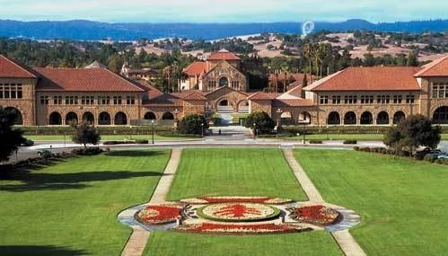

Las personas de San Francisco, California, Estados Unidos.
San Francisco es una ciudad diversa, con una población que representa una amplia gama de orígenes, culturas y experiencias. Según el censo de 2020, la ciudad es el hogar de personas de más de 180 países, y el 37% de la población nació fuera de los Estados Unidos.
|
La población de San Francisco
|

|
|
Personas destacadas de San Francisco en los últimos años
|
 |

|
Siglo XX
|
|
Personas destacadas de San Francisco
|
- Lorenzo de Córdova: El primer europeo en explorar la bahía de San Francisco fue el explorador español Lorenzo de Córdova en 1579.
- Juan Bautista de Anza: El explorador español Juan Bautista de Anza lideró una expedición que fundó la ciudad de San Francisco en 1776.
- James Marshall: El carpintero estadounidense James Marshall descubrió oro en el río American en 1848, lo que provocó la fiebre del oro de California.
- Leland Stanford: El empresario estadounidense Leland Stanford fundó la Universidad de Stanford en 1885.
- Frederick Law Olmsted: El paisajista estadounidense Frederick Law Olmsted diseñó Golden Gate Park, uno de los parques más grandes de los Estados Unidos.
- Irving Stone: El novelista estadounidense Irving Stone escribió una serie de biografías de personas famosas, incluyendo a la actriz Marilyn Monroe y el científico Albert Einstein.
- Gillian Anderson: La actriz británica Gillian Anderson es conocida por su interpretación de la agente especial Dana Scully en la serie de televisión The X-Files.
- Jerry Garcia: El músico estadounidense Jerry Garcia fue el líder de la banda de rock Grateful Dead.
- Maya Angelou: La poeta, autora y activista estadounidense Maya Angelou fue una de las figuras más destacadas del movimiento de derechos civiles.